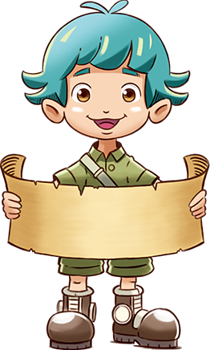
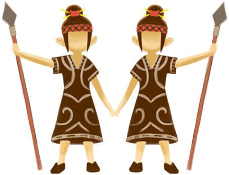
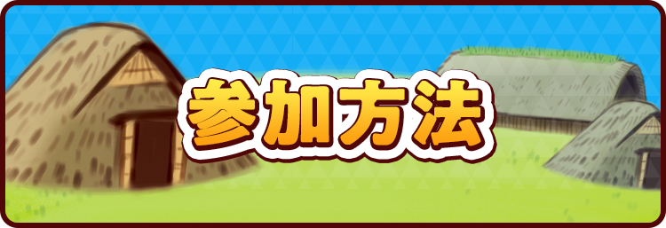
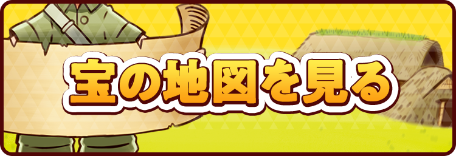
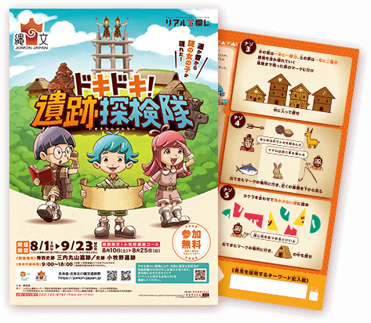

やあ！ 僕たちはこの遺跡群を世界遺産にするべく日々研究している遺跡探検隊！
メンバーはリーダーである僕、ジョーと、怒ると怖いマルコ、そして頭がいいサンちゃんだ。
マルコ

ジョー
サンちゃん
今日はいつものように遺跡に調査に来たんだけど、突然見たこともない不思議な2人の
女の子が現れたんだ。2人は鏡に映したみたいにそっくりだ。
「遺跡を守る２つの勾玉を探して…」
女の子は口をそろえてそう言うと消えてしまった。そしてそこには一枚の不思議な地図が残されていた。

「これって宝の地図じゃない！？」
マルコが目を輝かせた。
「世界遺産の決め手になるかもしれない！」
サンちゃんが大きな声で叫んだ。

宝の地図を見てみると、どうやら暗号のようなものが描かれていてなんだかさっぱりわからない。どうしよう。このままだと宝が見つけられないよ！そうだ！君も手伝ってくれない？
僕たちと一緒に宝探しをしようよ！

※このストーリーはフィクションです。

宝の地図を入手しよう！２つのコースに挑戦できるよ。それぞれの開催期間と参加可能時間に注意しよう！
＜手がかり＞がわかったら、ナゾを解こう！宝物のありかがわかるよ。
宝の地図(参加冊子)の
入手方法はコチラ＞＞
宝物を発見したら、必要なキーワードを発見報告所に報告しよう！
報告すると、発見者賞がもらえるよ。さらに抽選で賞品が当たるチャンス！
さらに、青森県縄文遺跡郡をめぐるスタンプラリーも開催中！参加すると応募できる賞品が増えるよ！詳細は宝の地図（参加冊子）を確認しよう！

宝の地図(参加冊子)入手方法は、【現地での無料配布】、及び、本サイト上での【無料ダウンロード】があります。

◆宝の地図（参加冊子）配布場所
【配布開始日】8/1～なくなり次第終了
・特別史跡 三内丸山遺跡
・史跡 小牧野遺跡
【配布開始日】8/1～なくなり次第終了
・特別史跡 三内丸山遺跡
・史跡 小牧野遺跡
◆宝の地図（参加冊子）無料ダウンロード
【ダウンロード開始日】8/1～
【ダウンロード開始日】8/1～